Subsections
Metadynamics
The metadynamics method uses a history-dependent potential [14] that generalizes to any type of colvars the conformational flooding [15] and local elevation [16] methods, originally formulated to use as colvars the principal components of a covariance matrix or a set of dihedral angles, respectively.
The metadynamics potential on the colvars
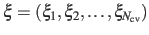 is defined as:
where
 is the history-dependent potential acting on the current values of the colvars
is the history-dependent potential acting on the current values of the colvars
 , and depends only parametrically on the previous values of the colvars.
is constructed as a sum of
, and depends only parametrically on the previous values of the colvars.
is constructed as a sum of
 -dimensional repulsive Gaussian ``hills'', whose height is a chosen energy constant
-dimensional repulsive Gaussian ``hills'', whose height is a chosen energy constant  , and whose centers are the previously explored configurations
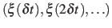.
Each Gaussian functions has a width of approximately
, and whose centers are the previously explored configurations
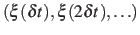.
Each Gaussian functions has a width of approximately
 along the direction of the
along the direction of the  -th colvar.
-th colvar.
During the simulation, the system evolves towards the nearest minimum of the ``effective'' potential of mean force
 , which is the sum of the ``real'' underlying potential of mean force
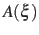 and the the metadynamics potential
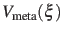.
Therefore, at any given time the probability of observing the configuration
, which is the sum of the ``real'' underlying potential of mean force
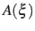 and the the metadynamics potential
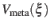.
Therefore, at any given time the probability of observing the configuration
 is proportional to
is proportional to
 : this is also the probability that a new Gaussian ``hill'' is added at that configuration.
If the simulation is run for a sufficiently long time, each local minimum is canceled out by the sum of the Gaussian ``hill'' functions.
At that stage the the ``effective'' potential of mean force
is constant, and
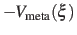 is an accurate estimator of the ``real'' potential of mean force
, save for an additive constant:
: this is also the probability that a new Gaussian ``hill'' is added at that configuration.
If the simulation is run for a sufficiently long time, each local minimum is canceled out by the sum of the Gaussian ``hill'' functions.
At that stage the the ``effective'' potential of mean force
is constant, and
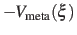 is an accurate estimator of the ``real'' potential of mean force
, save for an additive constant:
 |
(21) |
Assuming that the set of collective variables includes all relevant degrees of freedom, the predicted error of the estimate is a simple function of the correlation times of the colvars
 , and of the user-defined parameters ,
, and of the user-defined parameters ,
 and 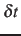 [17].
In typical applications, a good rule of thumb can be to choose the ratio
and 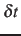 [17].
In typical applications, a good rule of thumb can be to choose the ratio
 much smaller than
much smaller than
 , where
, where
 is the longest among
's correlation times:
then dictates the resolution of the calculated PMF.
is the longest among
's correlation times:
then dictates the resolution of the calculated PMF.
To enable a metadynamics calculation, a metadynamics block must be defined in the colvars configuration file.
Its only mandatory keyword is the colvars option listing all the variables involved: multidimensional PMFs are obtained by the same metadynamics instance applied to all the colvars.
The parameters and are specified by the keywords hillWeight and newHillFrequency, respectively.
The values of these options are optimal for colvars with correlation times
in the range of a few thousand simulation steps, typical of many biomolecular simulations:
It is the user's responsibility to either leave hillWeight and newHillFrequency at their default values, or to change them to match the specifics of each system.
The parameter
is instead defined as approximately half the width of the corresponding colvar  (see 3.1).
(see 3.1).
Output files
When interpolating grids are enabled (default behavior), the PMF is written every colvarsRestartFrequency steps to the file output.pmf.
The following two options allow to control this behavior and to visually track statistical convergence:
Note: when Gaussian hills are deposited near lowerBoundary or upperBoundary (see 3.1) and interpolating grids are used (default behavior), their truncation can give rise to accumulating errors.
In these cases, as a measure of fault-tolerance all Gaussian hills near the boundaries are included in the output state file, and are recalculated analytically whenever the colvar falls outside the grid's boundaries.
(Such measure protects the accuracy of the calculation, and can only be disabled by hardLowerBoundary or hardUpperBoundary.)
To avoid gradual loss of performance and growth of the state file, either one of the following solutions is recommended:
- enabling the option expandBoundaries, so that the grid's boundaries are automatically recalculated whenever necessary; the resulting .pmf will have its abscissas expanded accordingly;
- setting lowerWall and upperWall well within the interval delimited by lowerBoundary and upperBoundary.
Performance tuning
The following options control the computational cost of metadynamics calculations, but do not affect results.
Default values are chosen to minimize such cost with no loss of accuracy.
Well-tempered metadynamics
The following options define the configuration for the ``well-tempered'' metadynamics approach [18]:
Multiple-replicas metadynamics
The following options define metadynamics calculations with more than
one replica:
-
multipleReplicas
 Multiple replicas metadynamics
Multiple replicas metadynamics
Context: metadynamics
Acceptable values: boolean
Default value: off
Description: If this option is on, multiple (independent) replica of the
same system can be run at the same time, and their hills will be
combined to obtain a single PMF [19]. Replicas are
identified by the value of replicaID. Communication is
done by files: each replica must be able to read the files
created by the others, whose paths are communicated through the file
replicasRegistry. This file, and the files listed in it,
are read every replicaUpdateFrequency steps. Every time
the colvars state file is written
(colvarsRestartFrequency), the file:
``output.colvars.name.replicaID.state''
is also written, containing
the state of the metadynamics bias for replicaID. In the
time steps between colvarsRestartFrequency, new hills are
temporarily written to the file:
``output.colvars.name.replicaID.hills'',
which serves as communication
buffer. These files are only required for communication, and may be
deleted after a new MD run is started with a different
outputName.
-
replicaID Set the identifier for this replica
Context: metadynamics
Acceptable values: string
Description: If multipleReplicas is on, this option sets a
unique identifier for this replica. All replicas should use
identical collective variable configurations, except for the value
of this option.
-
replicasRegistry Multiple replicas database file
Context: metadynamics
Acceptable values: UNIX filename
Default value: ``name.replica_files.txt''
Description: If multipleReplicas is on, this option sets the
path to the replicas' database file.
-
replicaUpdateFrequency How often hills are communicated between
replicas
Context: metadynamics
Acceptable values: positive integer
Default value: newHillFrequency
Description: If multipleReplicas is on, this option sets the
number of steps after which each replica (re)reads the other
replicas' files. The lowest meaningful value of this number is
newHillFrequency. If access to the file system is
significantly affecting the simulation performance, this number can
be increased, at the price of reduced synchronization between
replicas. Values higher than colvarsRestartFrequency may
not improve performance significantly.
-
dumpPartialFreeEnergyFile Periodically write the contribution to the
PMF from this replica
Context: metadynamics
Acceptable values: boolean
Default value: on
Description: When multipleReplicas is on, tje file
output.pmf contains the combined PMF from all
replicas. Enabling this option produces an additional file
output.partial.pmf, which can be useful to
quickly monitor the contribution of each replica to the PMF. The
requirements for this option are the same as
dumpFreeEnergyFile.
The following options may be useful only for applications that go beyond the calculation of a PMF by metadynamics:
-
name Name of this metadynamics instance
Context: metadynamics
Acceptable values: string
Default value: ``meta'' + rank number
Description: This option sets the name for this metadynamics instance. While it
is not advisable to use more than one metadynamics instance within
the same simulation, this allows to distinguish each instance from
the others. If there is more than one metadynamics instance, the
name of this bias is included in the metadynamics output file names, such as e.g. the .pmf file.
-
keepHills Write each individual hill to the state
file
Context: metadynamics
Acceptable values: boolean
Default value: off
Description: When useGrids and this option are on, all hills
are saved to the state file in their analytic form, alongside their
grids. This makes it possible to later use exact analytic Gaussians
for rebinGrids. To only keep track of the history of the
added hills, writeHillsTrajectory is preferable.
-
writeHillsTrajectory Write a log of new hills
Context: metadynamics
Acceptable values: boolean
Default value: on
Description: If this option is on, a logfile is written by the
metadynamics bias, with the name
``output.colvars. name
name .hills.traj'', which
can be useful to follow the time series of the hills. When
multipleReplicas is on, its name changes to
.hills.traj'', which
can be useful to follow the time series of the hills. When
multipleReplicas is on, its name changes to
``output.colvars.name.replicaID.hills.traj''.
This file can be used to quickly visualize the positions of all
added hills, in case newHillFrequency does not coincide
with colvarsRestartFrequency.
Jérôme Hénin
2015-03-03